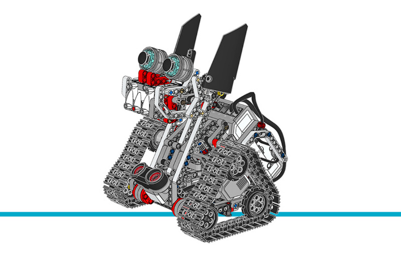

Znap¶
This example project makes Znap drive around randomly while avoiding obstacles. When objects are detected, it makes different sounds based on the distance to the detected object.
Building instructions
Click here to find all building instructions for the Expansion Set Models, or use this link to go to Znap directly.

Figure 34 Znap
Example program
#!/usr/bin/env pybricks-micropython
"""
Example LEGO® MINDSTORMS® EV3 Znap Program
------------------------------------------
This program requires LEGO® EV3 MicroPython v2.0.
Download: https://education.lego.com/en-us/support/mindstorms-ev3/python-for-ev3
Building instructions can be found at:
https://education.lego.com/en-us/support/mindstorms-ev3/building-instructions#building-expansion
"""
from pybricks.hubs import EV3Brick
from pybricks.ev3devices import Motor, UltrasonicSensor
from pybricks.parameters import Port, Direction
from pybricks.robotics import DriveBase
from pybricks.tools import wait, StopWatch
from pybricks.media.ev3dev import SoundFile
from random import randint
# Initialize the EV3 brick.
ev3 = EV3Brick()
# Configure 2 motors on Ports A and D. Set the motor directions to
# counterclockwise, so that positive speed values make the robot move
# forward. These will be the left and right motors of Znap.
left_motor = Motor(Port.A, Direction.COUNTERCLOCKWISE)
right_motor = Motor(Port.D, Direction.COUNTERCLOCKWISE)
# The wheel diameter of Znap is about 45 mm.
WHEEL_DIAMETER = 45
# The axle track is the distance between the centers of each of the
# wheels. This is about 150 mm for Znap.
AXLE_TRACK = 150
# The Driving Base is comprised of 2 motors. There is a wheel on each
# motor. The wheel diameter and axle track values are used to make the
# motors move at the correct speed when you give a drive command.
robot = DriveBase(left_motor, right_motor, WHEEL_DIAMETER, AXLE_TRACK)
# Configure the head motor with default settings.
head_motor = Motor(Port.B)
# Set up the Ultrasonic Sensor. It is used to detect objects.
ultrasonic_sensor = UltrasonicSensor(Port.S3)
# Set up the Timer. It is used to move for a random time.
timer = StopWatch()
# This is the main part of the program. It is a loop that repeats
# endlessly.
while True:
checking = True
move = 0
# This loop moves Znap around while checking for objects. The loop
# repeats until an object is closer than 400 mm.
while checking:
# Reset the Timer and generate a random time to move for.
timer.reset()
random_time = 600 * randint(1, 3)
# Znap moves in three different ways.
if move <= 1:
# Turn clockwise.
robot.drive(0, 250)
# Wait a bit the first time.
if move == 0:
wait(500)
move = 2
elif move == 2:
# Turn counterclockwise.
robot.drive(0, -250)
move = 3
else:
# Drive forward.
robot.drive(800, 0)
move = 1
# Keep driving until the random time has passed or an object is
# detected. If an object is detected the "checking" variable
# will be set to "False."
while checking and timer.time() < random_time:
checking = ultrasonic_sensor.distance() > 400
wait(10)
# Stop driving.
robot.drive(0, 0)
# Check if the object is closer than 250 mm.
if ultrasonic_sensor.distance() < 250:
# Roar and move the head forward to bite.
head_motor.dc(-100)
ev3.speaker.play_file(SoundFile.T_REX_ROAR)
wait(250)
head_motor.stop()
wait(1000)
else:
# Move the head and hiss.
head_motor.dc(-100)
wait(100)
head_motor.stop()
ev3.speaker.play_file(SoundFile.SNAKE_HISS)
# Reset the head motor to its initial position.
head_motor.run_target(1200, 0)